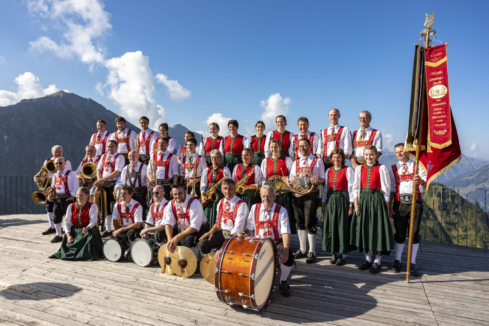
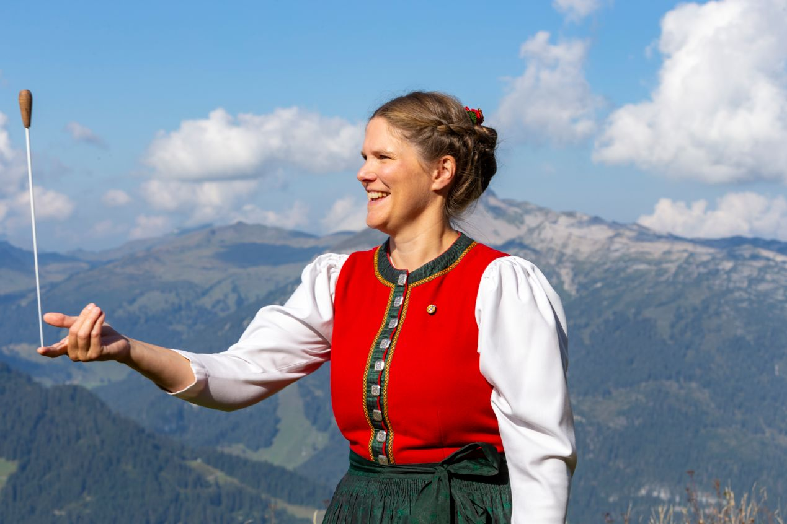

Unsere Kapellmeisterin versteht es, wie man jung und alt! Sie findet immer genau die richtigen Musikstücke die für unser Jahreskonzert oder auch die Sommerkonzerte bestens geeignet sind – die uns aber auch mal auf die Probe stellen. Der Spaß kommt aber auch dann nie zu kurz. Danke für deinen unermüdlichen Einsatz!
PS: „How to train your Dragon“ ist eins ihrer Lieblingslieder – oder denkt sie sich das über uns, wie sie uns am besten bändigen kann?